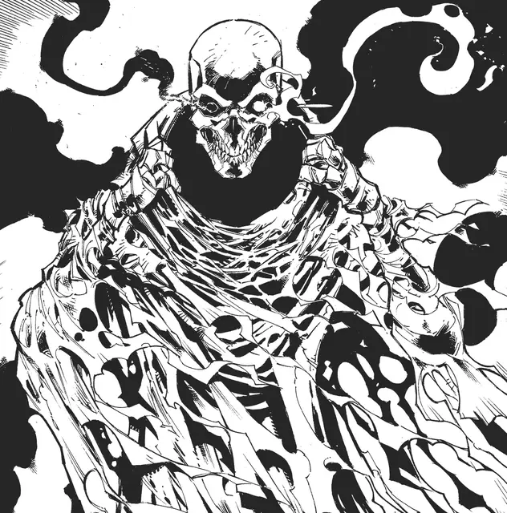

Глаз Страха и Пламени
Eye of Fear and Flame
Средняя Нежить, хаотично-злая

Класс Доспеха 15 (природный доспех)
Хиты 136 (16к8 + 64)
Скорость 30 футов
| мод | спас | ||
|---|---|---|---|
| СИЛ | 16 | +3 | +7 |
| ЛОВ | 14 | +2 | +2 |
| ТЕЛ | 18 | +4 | +8 |
| мод | спас | ||
|---|---|---|---|
| ИНТ | 18 | +4 | +4 |
| МДР | 17 | +3 | +7 |
| ХАР | 18 | +4 | +8 |
Навыки Восприятие +7
Сопротивление урону некротическая энергия, психическая энергия
Иммунитет к урону яд
Иммунитет к состояниям испуг, истощение, ослепление, отравление, очарование, ошеломление, паралич
Чувства тёмное зрение 60 футов, пассивное Восприятие 17
Языки Общий, Все (известные любому существу в радиусе 30 футов)
Опасность 9 (5000 опыта)
Бонус мастерства +4
Особенности
Иммунитет к изгнанию. Глаз страха и пламени невосприимчив к эффектам, изгоняющим Нежить.
Врождённое колдовство. Базовой характеристикой монстра является Интеллект (Сл спасброска от заклинания 16). Он может накладывать следующие заклинания, не нуждаясь в компонентах:
• Неограниченно: обнаружение зла и добра [detect evil and good], обнаружение мыслей [detect thoughts]
• 1/день каждое: эфирность [etherealness], истинное зрение [true Seeing]
Действия
Мультиатака. Глаз страха и пламени совершает две атаки Когтем и использует свои Самоцветные глаза.
Коготь. Рукопашная атака оружием: +7 к попаданию, дистанция 5 футов, одна цель. Попадание: 9 (1к12+3) рубящего урона.
Самоцветные глаза. Глаз страха и пламени испускает один из представленных ниже магических лучей, выбирая одну цель в пределах 90 футов, которую может видеть.
• Глаз страха. Цель и до 4 других существ на выбор глаз страха и пламени, находящиеся в пределах 10 футов от цели, должны совершить спасбросок Мудрости Сл 16, иначе станут испуганными на 1 минуту. Попавшее под действие существо может повторно совершить спасбросок в конце каждого своего хода, завершая на себе действие данного эффекта при успехе.
• Глаз пламени. Цель должна совершить спасбросок Ловкости Сл 16. При провале она получает 44 (8к10) урона огнём, и если это существо или воспламеняемый объект, оно загорается. В случае успеха цель получает половину урона и не загорается. Загоревшаяся цель получает 5 (1к10) урона огнём в начале каждого своего хода, пока существо не потушит огонь действием.
Описание
Глаз страха и пламени скитается по миру живых, заставляя отдельных личностей совершать ужасные вещи по своей прихоти, или быть уничтоженными. Если его приказам не подчиняются, глаз страха и пламени скидывает свой капюшон, открывая взору череп с чёрным и красным самоцветами, после чего нападает.
Мистические самоцветы. Глаз страха и пламени проецирует свою магическую силу через глаза, сделанные из самоцветов. В бою, он нацеливается не только на своих врагов, но и на невинных зевак, стремясь учинить как можно больше смятения и разрухи. Если это существо уничтожено, его самоцветы могут быть собраны, хотя те и имеют репутацию опасных, проклятых трофеев, аналогично камням души демилича. И всё же, есть шанс продать их определенным ценящим, и бесстрашным, коллекционерам.
Призрачный облик. Глаз страха и пламени напоминает покрытого тканями истощенного Гуманоида. Содержимое его капюшона видится только как непроглядная тьма. Тревожные сказания рассказывают о том, как эти создания скитаются по городским улицам в темнейшие ночи и тяжелейшие времена. Говорят, что глаза страха и пламени были созданы хаотичными богами для подстрекания к убийству наиболее законопослушных существ, или законопослушными богами с целью испытать своих последователей. Слухи гласят, что существует всего двадцать этих существ, но большая часть правды о них остаётся загадкой.
Жестокие кукловоды. Глаз страха и пламени часто предпочитает объявиться во времена неопределенности, такие как сразу после сокрушительного поражения групп лиц, или когда индивид рассуждает над сиеминутным решением. Нежить стремится совратить уязвимый разум, особенно законопослушного или доброго мировоззрения, давая задачи, активно испытывающие моральные ценности жертвы. Паладин может быть принуждён к убийству невинного, убеждаемый в том, что куда большая трагедия произойдёт в случае отказа. В конечном счёте, успех или провал задачи не столь интересен глазу страха и пламени, как подстрекательство ко злу, и всецелое распространение хаоса и страданий, следующих с тем.